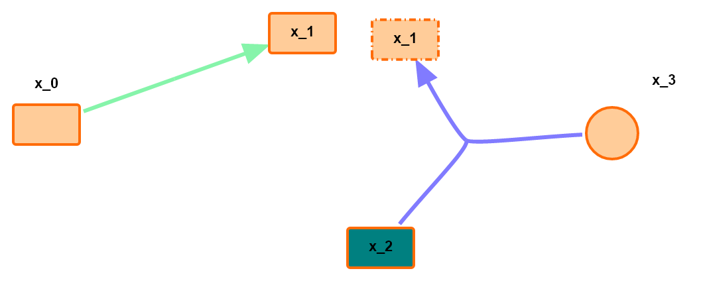

Welcome to SBMLDiagrams’s documentation!¶
Contents:
Introduction¶
SBMLDiagrams is a Python package to visualize networks embedded in SBML Level 3 models. If the SBML layout and render extension are used, the package will use this data to display the network. SBMLDiagrams can export PNG, JPG, PDF files. SBMLDiagrams can be used to add SBML layout and render to an existing valid SBML model which can be subsequently be exported.
We also have an interface of SBMLDiagrams to NetworkX to exploit the variety of layout algorithms as well as SBbadger which is a tool for generating realistic but random biochemical networks.
Code Examples¶
Load and visualize an SBML file.
import SBMLDiagrams
import tellurium as te
r = te.loada ('''
A -> B; v; B -> C; v; C -> D; v;
v = 0
''')
df = SBMLDiagrams.load(r.getSBML())
df.autolayout()
df.draw()
Load, read, edit and export to an SBML file.
import SBMLDiagrams
import os
dirname = "path//to"
filename = "SBML_file.xml"
f = open(os.path.join(dirname, filename), 'r')
sbmlStr = f.read()
f.close()
df = SBMLDiagrams.load(sbmlStr)
#get layout
print(df.getCompartmentPosition("compartment_id"))
print(df.getNodeSize("node_id"))
print(df.getReactionCenterPosition("reaction_id"))
#get render
print(df.getCompartmentFillColor("compartment_id"))
print(df.getNodeShape("node_id"))
print(df.getReactionFillColor("reaction_id"))
#set layout
df.setCompartmentSize(("compartment_id", [100, 100])
df.setNodeTextPosition(("node_id", [30, 30])
#set render
# There are three ways to set colors and the opacity is optional:
# 1) list-decimal rgb 1*3 matrix, i.e. [255, 255, 255];
# 2) str-html name, i.e. "white";
# 3) str-hex string (6-digit), i.e. "#000000";
df.setCompartmentBorderColor("compartment_id", [255, 255, 255])
df.setNodeFillColor("node_id", "red", opacity = 0.5)
df.setNodeTextFontColor("node_id", "#000000", opacity = 1.)
df.setReactionLineThickness("reaction_id", 3.)
sbmlStr_layout_render = df.export()
f = open("output.xml", "w")
f.write(sbmlStr_layout_render)
f.close()
Figure Examples¶
1) An example without compartment. There are different shapes of nodes with different fill colors. Texts can be placed outside the nodes with designed positions. There are also reactions with different fill colors. x_1 is an example of alias node.
{kind=link}
2) An example with compartments. The compartments are filled with different colors. There are different shapes of nodes with different border colors. x_1 and x_5 are examples of alias nodes.

3) An example with only nodes (no reactions in the network). There are five types of node shapes with different fill colors and border colors.

An example with long text contents.